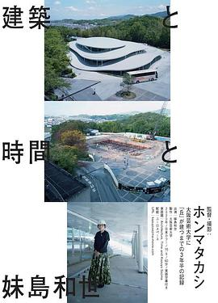

建築と時間と妹島和世
SANAA很厉害啊，不过纪录片有点乏味，建筑设计的还是很舒适的
作品信息
| 导演 | ホンマタカシ |
| 编剧 | ホンマタカシ |
| 主演 | 妹島和世 |
| 制片国家/地区 | 日本 |
| 语言 | 日语 |
| 上映日期 | 2020-10-03(日本) |
| 片长 | 60分钟 |
说过什么
2022-06-26 19:12:20
看过 · 时间来自广播，短评来自标记页
SANAA很厉害啊，不过纪录片有点乏味，建筑设计的还是很舒适的
最后一次看到是 2026-08-01T11:05:04+10:00 · 豆瓣原页